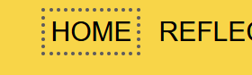
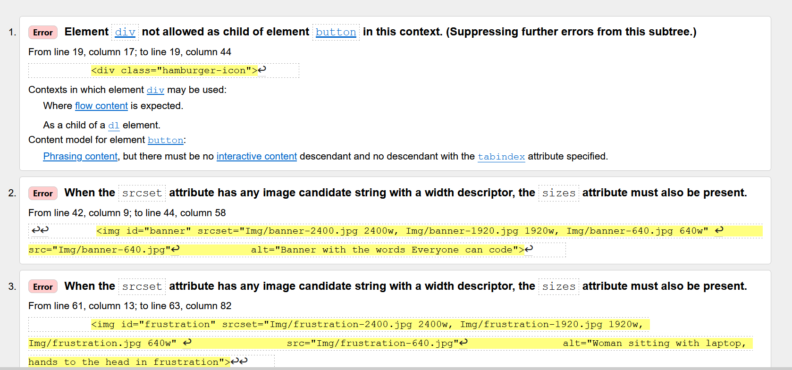

Our thoughts on web accessibility
Our main goal with the page, was to make a easily accessible webpage. To ensure that, we used different tools to help us understand how a webpage become accessible to most people. We used WAVE a lot to scan the webpage to make sure the contrast and structure were satisfying (wave webpage)
One of the things we had in mind when thinking about asseccibility, was to navigate the page by keybord. And while navigating around we found that the focus was to invisible, so we made the focus outline-width and outline-offset lager. Here an example off a before and after the focus was chanced.
When it comes to links we tried to give every link a short and precise name. We also made every extern link open in a new window. Except from the ones linking around our own page, like the ones in the nav bar.
We ran our code in the W3C html validator and found that, even after working with the img tag, there were still some problems. We fixed the issues W3C suggested in the index page.
We wanted the pictures to load according to the users internet speed, and the size of the screen. We used all the attributes for this in the index page, but please notice that the pictures on the other pages may vary from this structure. For example on this page we have some small example off our code, and these pictures are not ment to be in any high resolution but is ment to be small and just for illustration.
